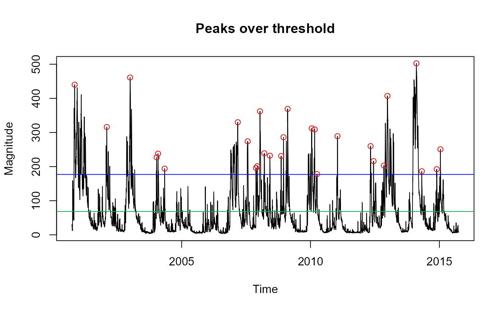

Estimated growth factors as a function of return period, with inputs of Lcv & LSkew (linear coefficient of variation & linear skewness). The Lcv and LSkew in this case should be calculated from peaks over threshold data and the ppy argument is necessary where the average number of peaks per year is not 1.
Details
Growth factors (GF) are calculated by the method outlined in the Flood Estimation Handbook, volume 3, 1999. The average number of peaks per year argument (ppy) is for the function to convert from the peaks over threshold (POT) scale to the annual scale. For example, if there are 3 peaks per year, the probability associated with the 100-yr return period estimate would be 0.01/3 (i.e. an RP of 300 on the POT scale) rather than 0.01.
Examples
# Get POT flow data from the Thames at Kingston (noting the no. peaks per year).
# Then estimate the 100-year growth factor with lcv and lskew estimates
tpot <- POTextract(ThamesPQ[, c(1, 3)], thresh = 0.90)

#> [1] "Peaks per year: 1.867263"
GenParetoGF(Lcv(tpot$peak), LSkew(tpot$peak), RP = 100, ppy = 1.867)
#> [1] 2.353059
# Multiply by the median of the POT data for an estimate of the 100-year flood
GenParetoGF(Lcv(tpot$peak), LSkew(tpot$peak), RP = 100, ppy = 1.867) * median(tpot$peak)
#> [1] 600.7358